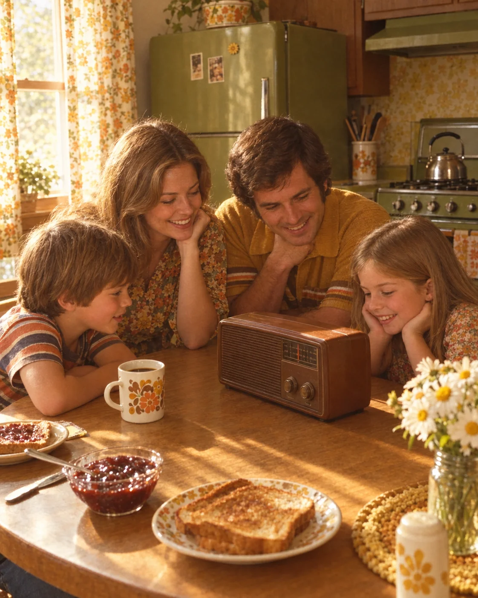
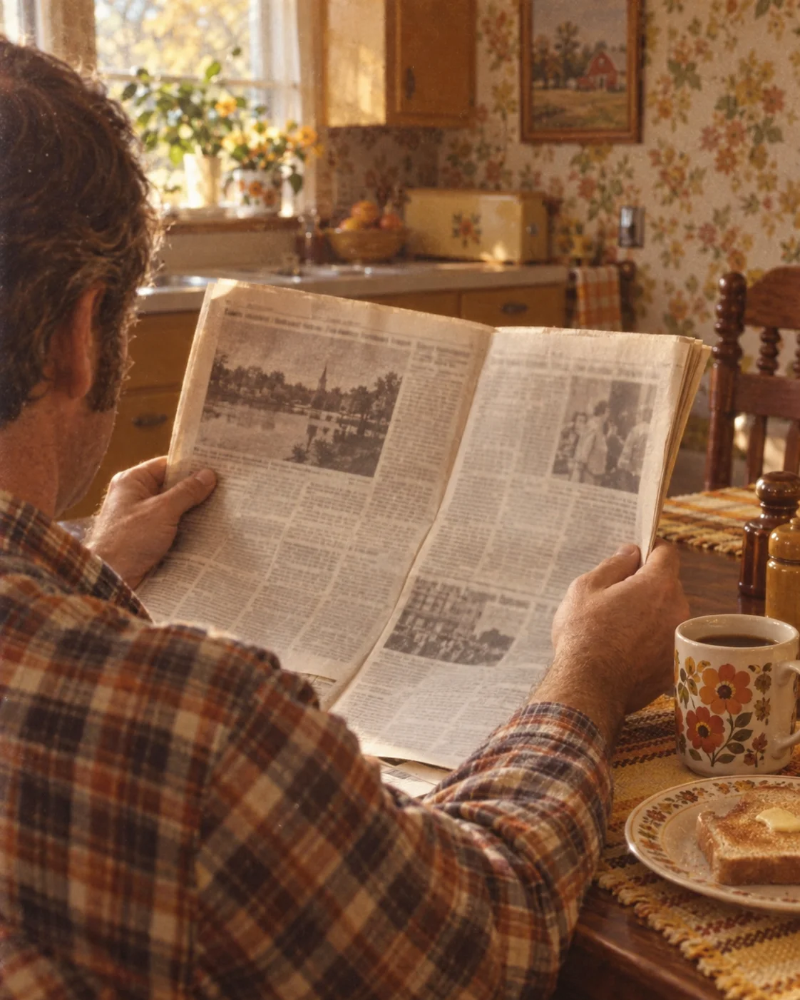
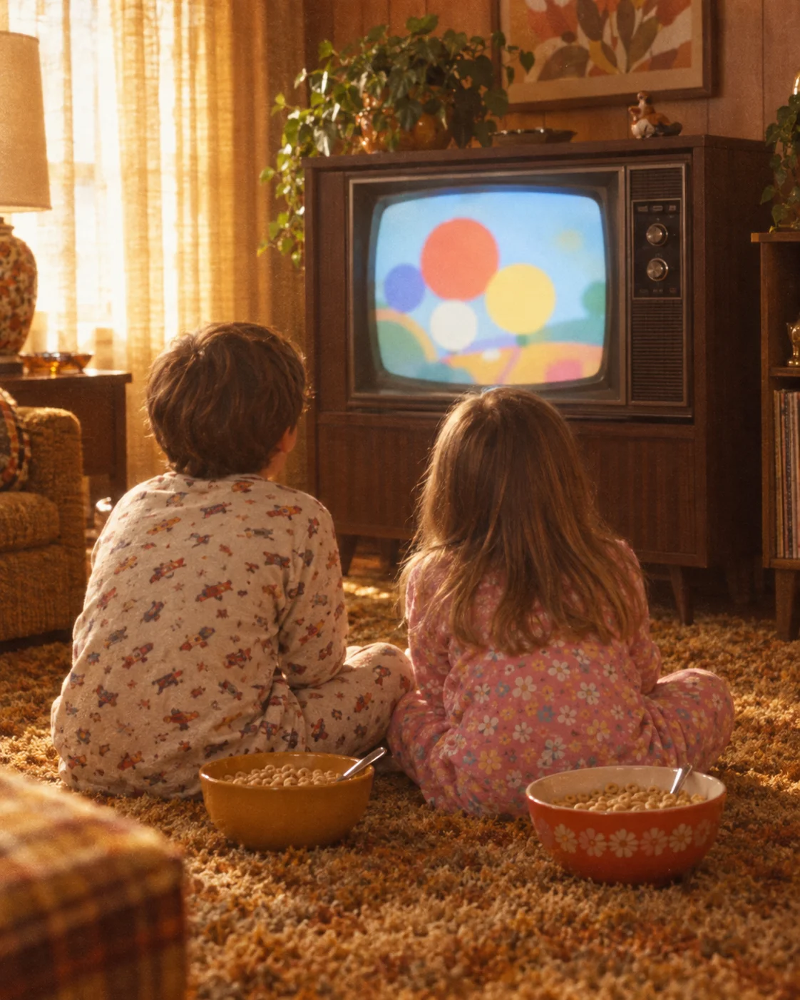
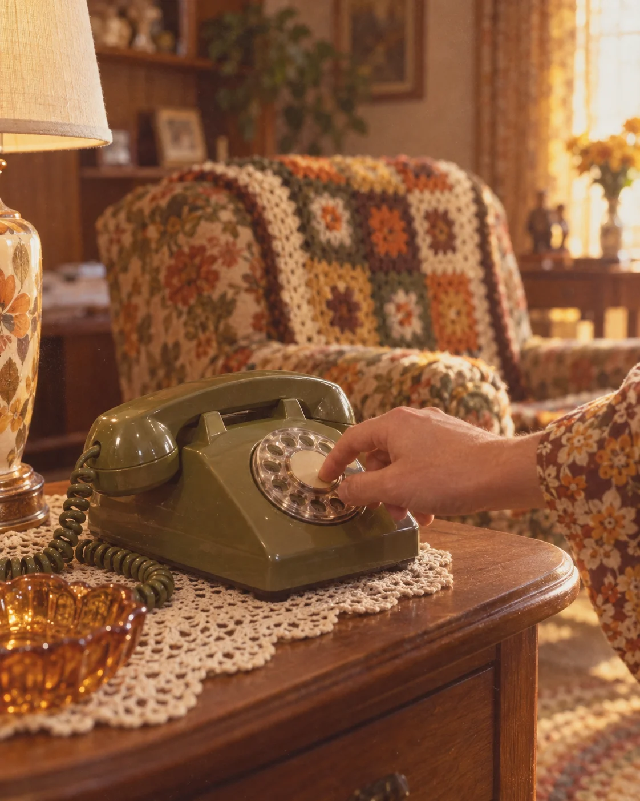
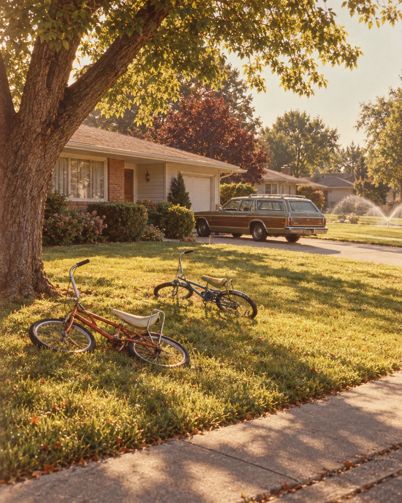
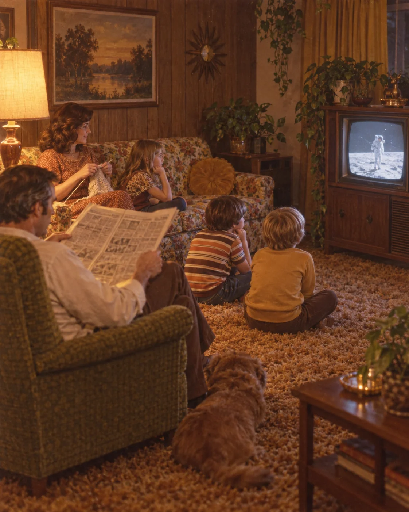

The little things we remember about Grandma's kitchen
A recipe tin, a well-used apron, and a table where there was always room for one more.
AI-created period illustration
Read the storyHOME & EVERYDAY LIFE - 1960s-80s
No alarm clock. The radio on in the kitchen. Someone calling just to talk, and the whole day still ahead of you. What did Saturdays look like in your house?
Some days of the week blur together. Saturday never did. It had its own sound, its own smell and its own speed, and you could feel it before your feet even touched the floor.
There was no alarm. There was no plan. There was just the morning light, the house waking up one person at a time, and the small sounds that meant nobody was in a hurry.

Weekday breakfast was a race. Saturday breakfast was an event with no finish line. The toast kept coming, the coffee kept pouring, and the newspaper spread out over the table until it covered the jam.

Dad read the sports section first, or the comics, depending on the house. Somebody always wanted the funnies, and somebody always had them, so you learned to wait and read over a shoulder.
There was nowhere to be. That was the whole point.
Every kitchen had one: a plastic radio near the toaster, with a dial that glowed a little and a cord that never quite reached a convenient outlet. It played while the dishes dried and while the table got wiped down, and nobody ever turned it off on purpose.
If your house listened to the countdown, you knew the voice. NPR's anniversary story recalls that American Top 40 premiered on the weekend of July 4, 1970, with Casey Kasem counting the hits from No. 40 up to No. 1. Billboard remembers the signoff that a whole generation can still say along with him: "Keep your feet on the ground, and keep reaching for the stars."
You did not choose the songs. You just let them play, and now every one of them sounds like a kitchen.

For the kids, Saturday had a schedule after all. It was just made by the networks, not by anyone's parents. Encyclopedia.com notes that 1966 was the first year all three major networks aired animation blocks on Saturday morning, and The Saturday Evening Post tells how the block grew after The Flintstones ended its prime-time run that same year.
You watched in your pajamas, close enough to the set to hear it hum, with a bowl of cereal as big as a mixing bowl. When the cartoons gave way to the grown-up shows, the morning was officially over, and you were sent outside.

Nobody texted. Nobody emailed. If somebody wanted to hear your voice, they called, and you stood in the hallway or sat on the little bench by the phone table, because the cord only reached so far.
Some calls had no news in them at all. That was not the point. Somebody just wanted to talk, and you had the time, because it was Saturday.

And when the morning finally let go of you, the whole day was still there. Bikes went down on the lawn. Somebody mowed something. Somebody washed the car by hand, slowly, with the radio brought out to the driveway.
You might end up at a friend's house, or nowhere in particular. Nobody tracked it. You came back when the streetlights came on.

When it got dark, the whole family ended up in the same room in front of the same television, because there was only one. Somebody's dad fell asleep in the armchair and swore he was just resting his eyes.
Nobody called it quality time. It was just the end of a Saturday, and everybody was there for it.
A slow Saturday was never really about doing nothing. It was the one day the whole house moved at the same speed, and nobody asked you to hurry.
What did Saturdays look like in your house? And which part would you bring back first: the radio, the paper, or the phone call?
Send this to someone who remembers a Saturday like this. They will still know the station that radio was tuned to.
All images in this article are AI-generated illustrations inspired by the period, not historical photographs.
A recipe tin, a well-used apron, and a table where there was always room for one more.
AI-created period illustration
Read the story
Remember the rotary phone? The long cord, the slow dial, the one phone in the house. A warm look back, with a question for you.
Read the story
10 questions about familiar objects. No timer.
AI-created period illustration
Take the quiz← Back to Dear Old Days · All articles · About · Privacy policy · Photo credits